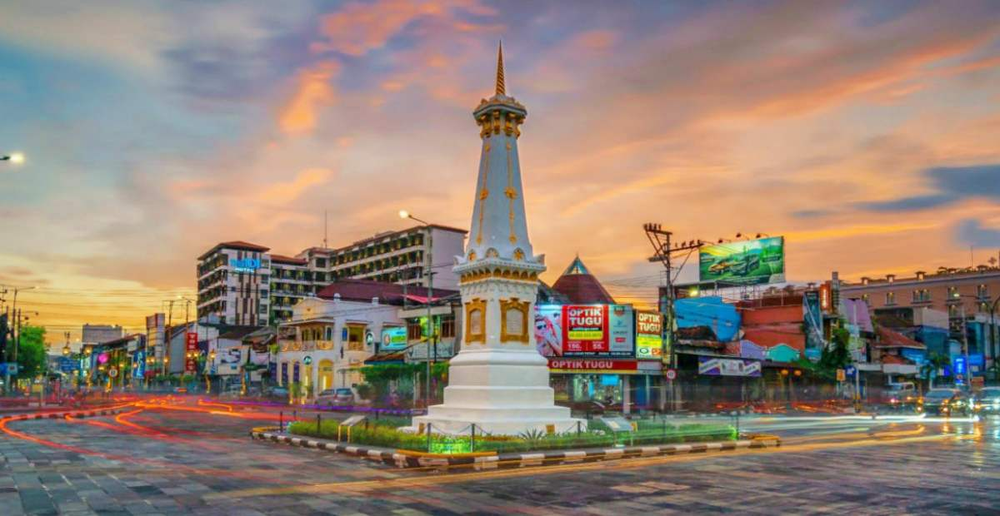
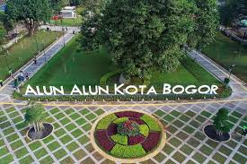
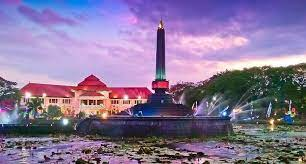
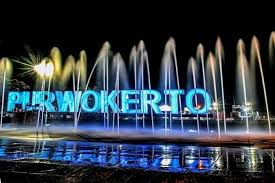
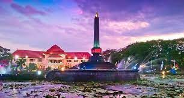
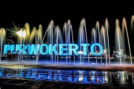

Profile pembuat
- Nama: Ahmad Mustofa Mubarok
- Email: ahmadmstfa2323@gmail.com
- linkedin: https://www.linkedin.com/in/ahmad-mustofa-mubarok-2b9539293?trk=contact-info
Deskripsi my gallery whislist
Ini adalah halaman web gallery yang menampilkan daftar kota idaman saya yang ada di Indonesia.Kota atau daerah ini memiliki keindahan alam,budaya,sejarah,dan kenangan unik yang tidak semua kota memilikinya
Foto kota favorit
 
 



Informasi kota favorit
| Nama kota | Icon kota | Jumlah penduduk | Keunikan |
|---|---|---|---|
| Jogja | Tugu jogja | 3,67 juta | Daerah istimewa |
| Bogor | Istana bogor | 5,4 juta | wisata alamnya |
| Bandung | Gedung sate | 2,4 juta | wisata bandung |
| jakarta | Monas | 10,67 juta | Budaya yang beragam |
| Malang | Alun-alun | 2,9 juta | Kota bunga |
| Purwokerto | Alun-alun | 1,8 juta | Kota pelajar |